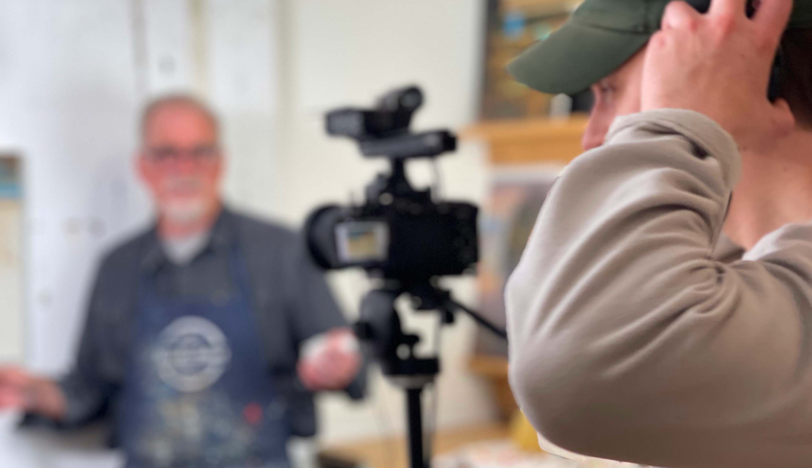
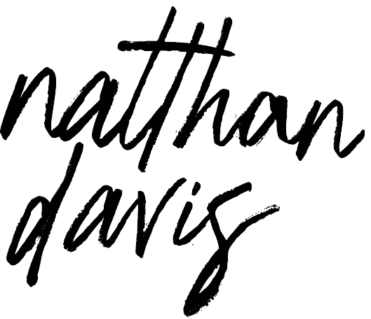

Hello, I am


Graphic designer and marketer from Vancouver, BC that blends creativity with a business edge. Drawing from my experience at a NYC venture capital firm and BCIT's BBA program, I specialize in crafting visually compelling solutions grounded in strategic research. Usually finding myself working in the Food and Beverage industry, I thrive in leading advertising campaigns, developing branding materials and improving user experiences. As a multidisciplinary designer, I look forward to exploring new industries and creative mediums.
Natthan Davis, a graphic designer and marketer from Vancouver, BC that blends creativity with a business edge. Drawing from my experience at a NYC venture capital firm and BCIT's BBA program, I specialize in crafting visually compelling solutions grounded in strategic research.
Videos We Create
What: I specialize in video production that allows companies to connect directly with their audience through effective and creative storytelling. My goal is to collaborate and work towards the best possible outcome by utilizing all my skill on your behalf.
So lets create something unforgettable together.
So lets create something unforgettable together.
Videos We Create
What: Social We ccreative narritive videos that try and capture nautral beautry somthing and somthing. Our work is ment to hold a purpose and educat
Why: IBecuase it;s fun, collabertive and somthing else.
Why: IBecuase it;s fun, collabertive and somthing else.
Services We Provide
Videography
Promotional Videos
Implemented new creative process for grass-fed dairy brand for weekly social media videos.
Videography
Event Media
Capturing life as it happens
Design
Short-form Videos
Reaching new audiences
Design
Brand Documentires
capturing the essence of your brand, highlighting its values, unique journey, and the passion driving your business, creating a lasting impact on your target audience.
Advertising
Marketing Management
Wearing different hats to go from concept to finished product
Design
Graphic Design
Visual communication